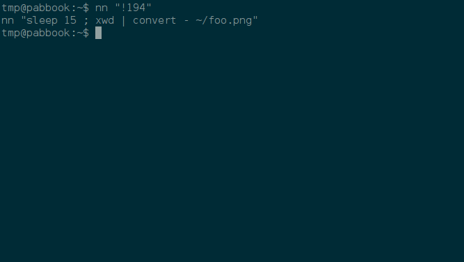

Some time ago I started to append neat commands I don’t want to forget to a file in my home directory (e.g echo 'foo' >> ~/commands.txt). So I had to navigate to a previous command with CTRL-p, add “echo”, wrap it in singlequotes and add the path to my notes file. Quite a long process to append one command to a file. I already knew that !! repeats the last command but not how to get it into a file instead of being executed. Actually it works quite simple with echo "!!" >> ~/commands.txt (which appends your last command to the file ‘commands.txt’ in your home directory). I still wanted an easier solution so I created the following bash alias to save me some typing and to be less distraction from the actual task I’m trying to get done:
alias ncmd='echo $1 >> ~/commands.md'
I added the above line to my “~/.bash_aliases” file and ran
. .bash_aliases
to source it. Then I started to test the above solution and noticed issues with complex arguments and wildcards. I also read that it’s not recommended to use variables in bash aliases. So I searched for a proper solution and learned quite a lot about bash syntax and how to define functions.
Solution¶
My final solution is the following function in my .bashrc file:
nn () {
echo "$@" >> ~/commands.txt
}
The power of history expansion¶
Now you can use all the power of history expansion as an argument to the function nn. For example nn "!!" appends the last command, nn "!-5" appends the 5th last, nn "!100" the 100th command in your history file, nn "!ssh" appends the first command with ssh in it. Read man history for further examples. Double quotes are mandatory.
You can also add explanations like nn "Commands to copy foo to bar:" and then append the appropriate commands.
Screenshot: 
fc - fix command¶
fc is a little programm to list or edit and re-execute commands from the history list. Read
help fc
Copyheart: ♡2016 by Parobalth. Copying is an act of love, please share.